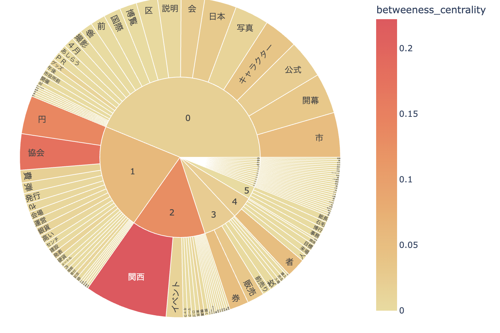
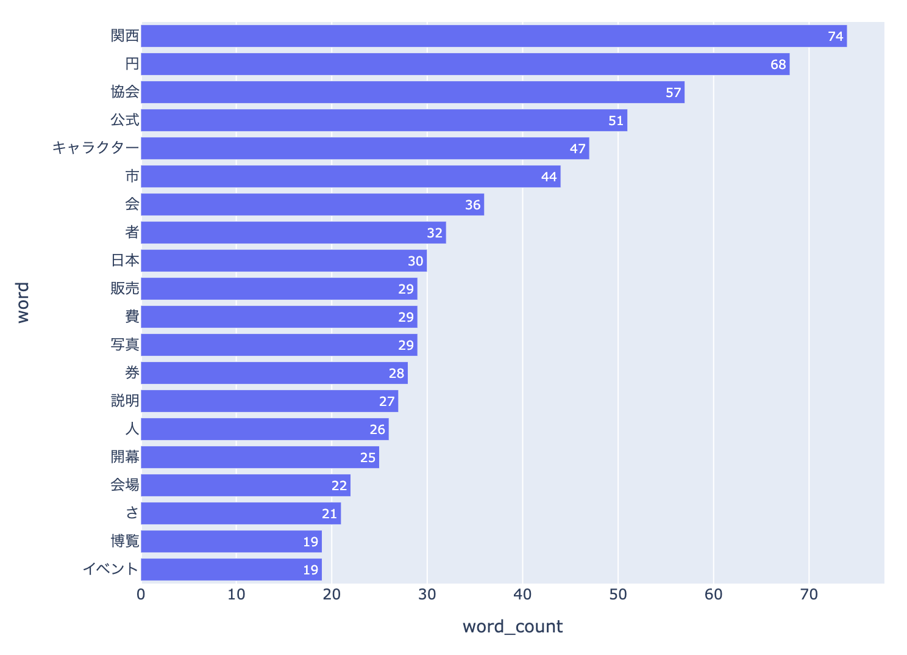
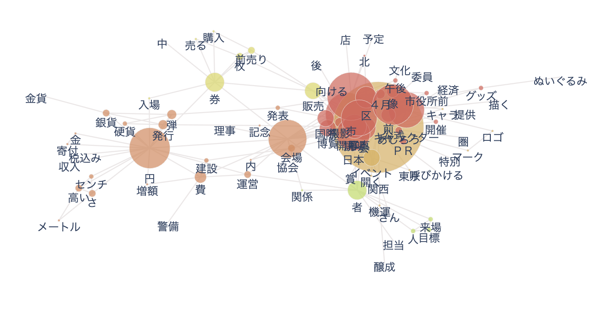
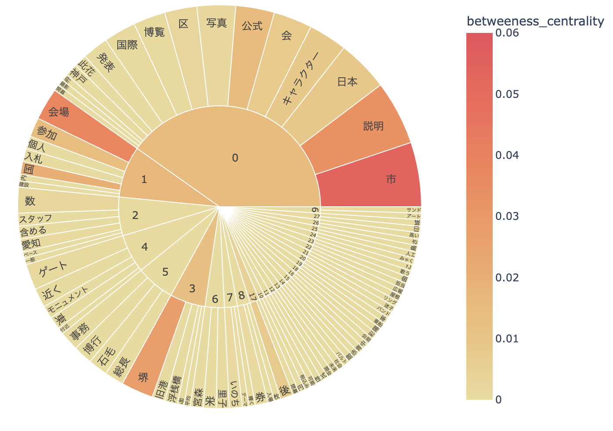
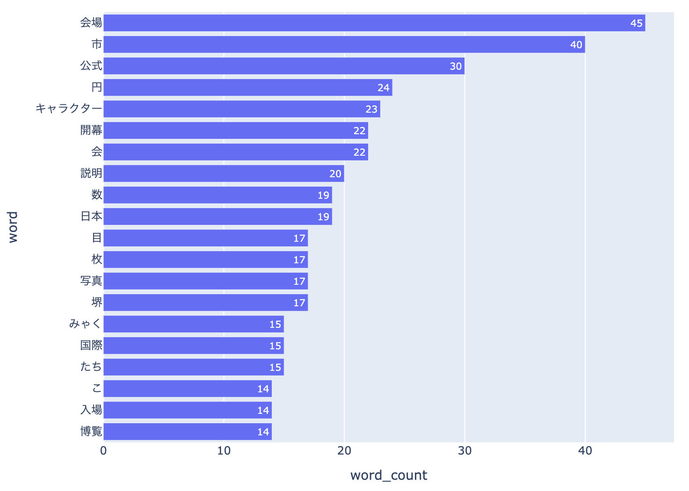
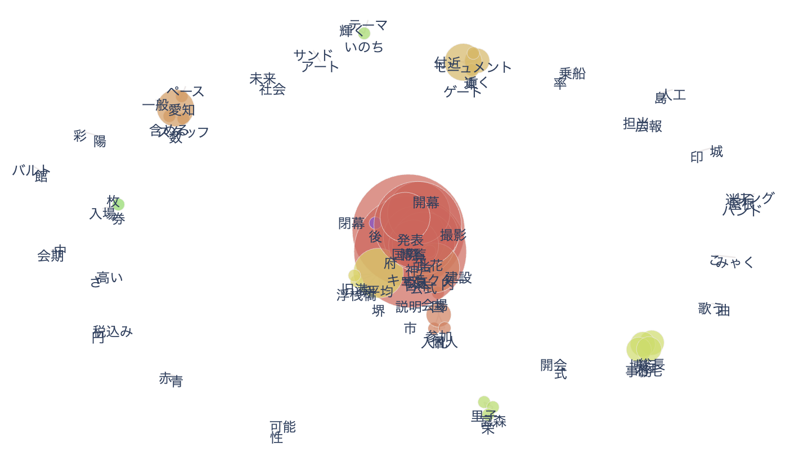
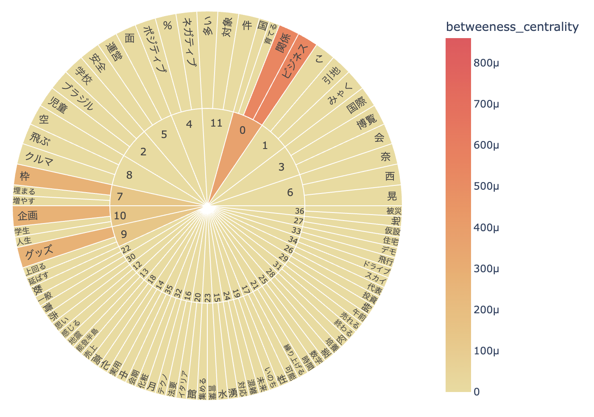
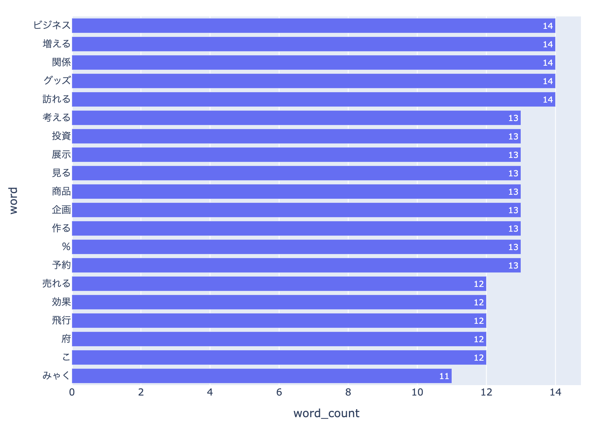

はじめに
分析内容
ミャクミャクとコンテンツ（グッズやイベント、イメージなど）の開催前、開始月、終了月の変化を探る分析方法
「ミャクミャク」という単語で記事を絞り、サンバースト、頻出単語、共起ネットワークの3つの資料を使って分析する開催前



グッズ、ぬいぐるみ、イベントなどのコンテンツを指す言葉が見られる
開始月



ミャクミャクではなく、万博の内容に触れる単語が多い
終了月


 ミャクミャクではなく、万博の評価や経済効果に触れる単語が多い
ミャクミャクではなく、万博の評価や経済効果に触れる単語が多い
ミャクミャクではなく、万博の評価や経済効果に触れる単語が多い
結果
ミャクミャクとコンテンツの関わりはよく分からなかった。しかし、ミャクミャクを通じて万博の総合的な評価を知ることができるかもしれない。
感想と反省
正直あまり良い分析ではなかったと思いました。その理由として- 制限するワードがバラバラで、表もバラバラ
- 想像よりミャクミャク自体に触れるような記事が多くなかった